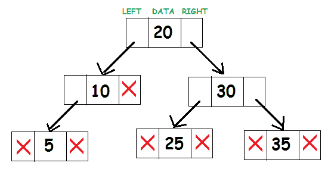
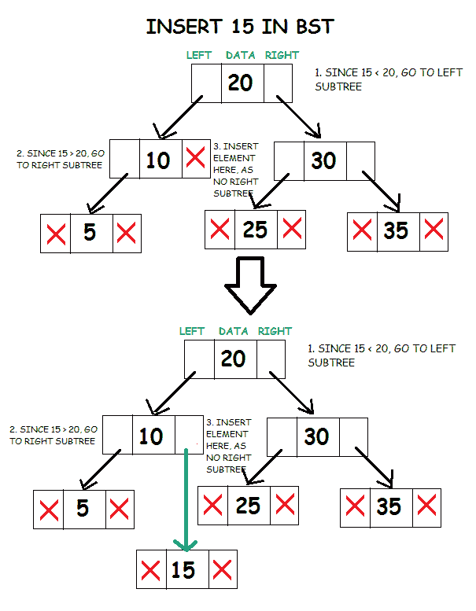
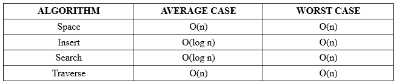
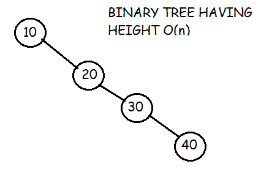

二叉查找树
原文：https://www.studytonight.com/data-structures/binary-search-tree
二叉查找树是一种用于快速添加和删除数据的有用数据结构。
它由存储数据的节点组成，还链接到最多两个其他子节点。正是链接到的叶子和链接叶子(也称为父节点)之间的关系，使得二叉树成为如此高效的数据结构。
对于要成为二叉查找树的二叉树，根节点的左子树中所有节点的数据应该小于根的数据。根节点右子树中所有节点的数据应该大于等于根的数据。因此，树最左边的叶子具有最低值，而树右边的叶子具有最大值。
二叉查找树的代表如下所示:

考虑根节点 20。子树(10，5)左边的所有元素都小于 20，子树(25，30，35)右边的所有元素都大于 20。
BST 的实现
首先，定义一个结构为tree_node。它将存储数据和指向左右子树的指针。
struct tree_node
{
int data;
tree_node *left, *right;
};
节点本身非常类似于链表中的节点。链表代码的基本知识将对理解二叉树的技术非常有帮助。
最合理的做法是创建一个二叉查找树类，将树的工作封装到一个区域中，并使其可重用。该类将包含向树中插入数据、搜索数据是否存在的函数以及遍历树的方法。
class BST
{
tree_node *root;
void insert(tree_node* , int );
bool search(int , tree_node* );
void inorder(tree_node* );
void preorder(tree_node* );
void postorder(tree_node* );
public:
BST()
{
root = NULL;
}
void insert(int );
bool search(int key);
void inorder();
void preorder();
void postorder();
};
有必要将根初始化为空，以便后面的函数能够识别它不存在。
该类的所有公共成员都被设计为允许该类的用户使用该类，而无需处理底层设计。递归调用的函数是私有的，允许它们沿着树向下移动。
插入到 BST 中
将数据插入到二叉树中涉及到一个函数，该函数在树中插入键值的适当位置搜索一个未使用的节点。插入函数通常是一个递归函数，它在二叉树的层次上继续向下移动，直到某个位置有一个未使用的叶子，这个位置遵循以下放置节点的规则。
- 比较要插入的根节点和元素的数据。
- 如果根节点的数据更大，并且如果存在左子树，那么重复步骤 1，其中根=左子树的根。否则，
- 插入元素作为当前根的左子元素。
- 如果根节点的数据更大，并且如果存在右子树，那么重复步骤 1，其中根=右子树的根。
- 否则，插入元素作为当前根的右子元素。

void BST :: insert(tree_node *node, int d)
{
// element to be inserted is lesser than node’s data
if(d < node->data)
{
// if left subtree is present
if(node->left != NULL)
insert(node->left, d);
// create new node
else
{
node->left = new tree_node;
node->left->data = d;
node->left->left = NULL;
node->left->right = NULL;
}
}
// element to be inserted is greater than node’s data
else if(d >= node->data)
{
// if left subtree is present
if(node->right != NULL)
insert(node->right, d);
// create new node
else
{
node->right = new tree_node;
node->right->data = d;
node->right->left = NULL;
node->right->right = NULL;
}
}
}
由于根节点是私有成员，我们还编写了一个公共成员函数，该函数对类的非成员可用。它调用私有递归函数来插入元素，并处理根节点为空的情况。
void BST::insert(int d)
{
if(root!=NULL)
insert(root, d);
else
{
root = new tree_node;
root->data = d;
root->left = NULL;
root->right = NULL;
}
}
在英国标准时间搜索
搜索功能的工作方式与 insert 类似。它将检查当前节点的键值是否是要搜索的值。如果不是，它应该检查要搜索的值是否小于节点的值，在这种情况下，它应该在左边的子节点上递归调用，或者如果它大于节点的值，它应该在右边的子节点上递归调用。
- 比较根节点的数据和要搜索的值。
- 如果根节点的数据更大，并且如果存在左子树，那么重复步骤 1，其中根=左子树的根。否则，
- 如果根节点的数据更大，并且如果存在右子树，那么重复步骤 1，其中根=右子树的根。否则，
- 如果要搜索的值等于根节点的数据，则返回 true。
- 否则，返回 false。
bool BST::search(int d, tree_node *node)
{
bool ans = false;
// node is not present
if(node == NULL)
return false;
// Node’s data is equal to value searched
if(d == node->data)
return true;
// Node’s data is greater than value searched
else if(d < node->data)
ans = search(d, node->left);
// Node’s data is lesser than value searched
else
ans = search(d, node->right);
return ans;
}
由于根节点是私有成员，我们还编写了一个公共成员函数，该函数对类的非成员可用。它调用私有递归函数来搜索元素，并处理根节点为空的情况。
bool BST::search(int d)
{
if(root == NULL)
return false;
else
return search(d, root);
}
在基站中穿越
主要有三种类型的树遍历:
1.有序遍历:
在这种技术中，我们执行以下操作:
- 处理根节点的数据。
- 首先，完全遍历左子树。
- 然后，遍历右子树。
void BST :: preorder(tree_node *node)
{
if(node != NULL)
{
cout<<node->data<<endl;
preorder(node->left);
preorder(node->right);
}
}
2.后序遍历
在这个遍历技术中，我们执行以下操作:
- 首先完全遍历左子树。
- 然后，完全遍历右子树。
- 然后，处理节点的数据。
void BST :: postorder(tree_node *node)
{
if(node != NULL)
{
postorder(node->left);
postorder(node->right);
cout<<node->data<<endl;
}
}
3.有序遍历
在有序遍历中，我们执行以下操作:
- 第一个进程左子树。
- 然后，处理当前根节点。
- 然后，处理右子树。
void BST :: inorder(tree_node *node)
{
if(node != NULL)
{
inorder(node->left);
cout<<node->data<<endl;
inorder(node->right);
}
}
二叉查找树的有序遍历给出了二叉查找树中存在的数据元素的排序。这是二叉查找树的重要财产。
因为根节点是私有成员，所以我们还编写了公共成员函数，非类成员也可以使用。它调用私有递归函数遍历树，并处理根节点为空的情况。
void BST :: preorder()
{
if(root == NULL)
cout<<"TREE IS EMPTY\n";
else
preorder(root);
}
void BST :: postorder()
{
if(root == NULL)
cout<<"TREE IS EMPTY\n";
else
postorder(root);
}
void BST :: inorder()
{
if(root == NULL)
cout<<"TREE IS EMPTY\n";
else
inorder(root);
}
复杂度分析

搜索和插入的时间复杂度取决于树的高度。平均来说，有 n 个节点的二分搜索树有 O(log n) 的高度。然而，在最坏的情况下，当不平衡的树类似于链表时，树的高度可以是0(n)。例如，在这种情况下:

遍历需要 O(n) 时间，因为每个节点都必须被访问。